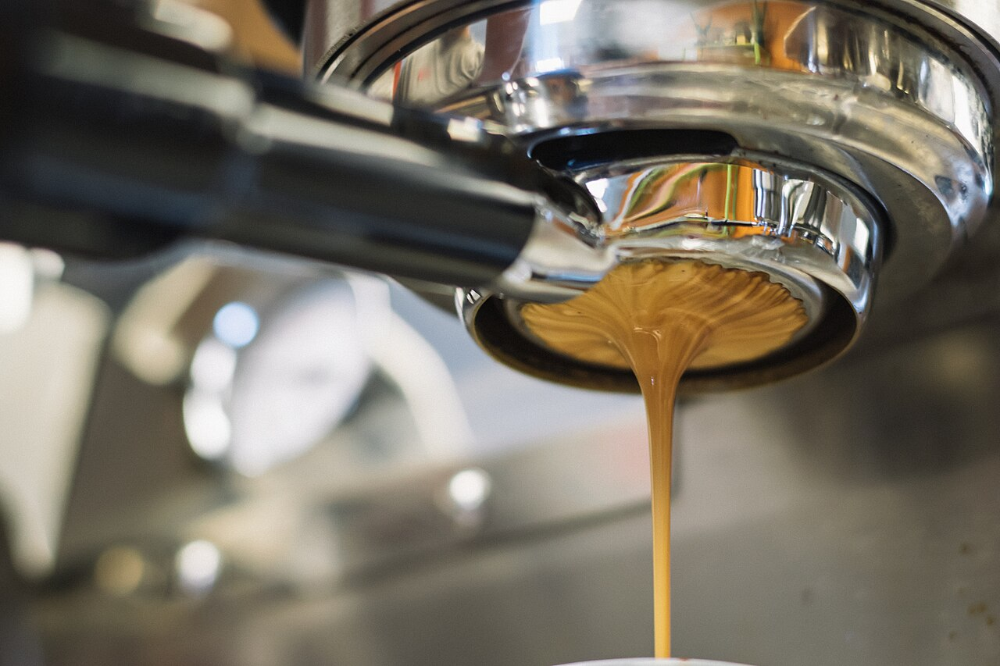
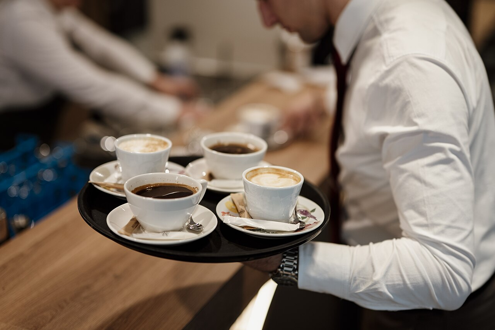
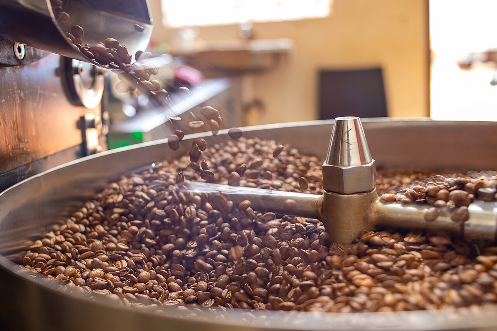

Café de especialidad en Chamberí
Tostamos cada martes y servimos de lunes a viernes, de 8:00 a 18:00.
Ver la zonaVisítanos
A cinco minutos a pie de la glorieta de Bilbao.
- Lunes a viernes8:00–18:00
- Sábado9:00–15:00
- Domingo9:00–14:00
- Entrada a pie de calle, sin escalones.
- Wifi en la barra larga; mesas sin portátil los fines de semana.

La carta de la barra
Leche entera o de avena, sin coste extra.
Espresso
- EspressoDoble, 36 g en taza1,80 €
- CortadoEspresso y un dedo de leche2,00 €
- Flat whiteDoble, 160 ml3,00 €
- CappuccinoEspuma densa, 200 ml2,80 €
Filtro
- V60 de origenEsta semana: Huila, Colombia3,50 €
- Café de jarraRecién hecho cada hora2,50 €
- Cold brewMacerado 16 horas3,50 €
- Espresso tonicCon piel de naranja3,80 €
Para acompañar
- Cruasán de mantequillaDel obrador de enfrente2,40 €
- Tostada de masa madreTomate y aceite de oliva3,80 €
- Bizcocho de plátanoHecho aquí cada mañana3,20 €
- Galleta de avenaCon chocolate negro2,00 €


Tostamos los martes, en tandas de 12 kilos
Compramos a tres fincas de Colombia, Etiopía y Brasil y tostamos claro, para que el café sepa a fruta y no a quemado. Lo que sale el martes se sirve hasta el lunes siguiente.
- Bolsa de 250 gGrano o molido para tu cafeteradesde 13 €
- Bolsa de 1 kgPara oficinas y casas con mucho cafédesde 42 €

Del grano verde a tu taza
Seleccionamos, tostamos y servimos en el mismo local.
Ven a verlo